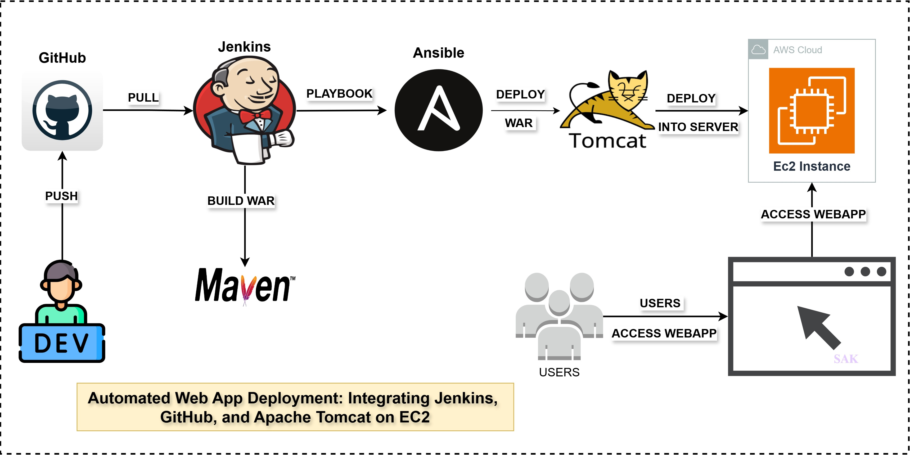
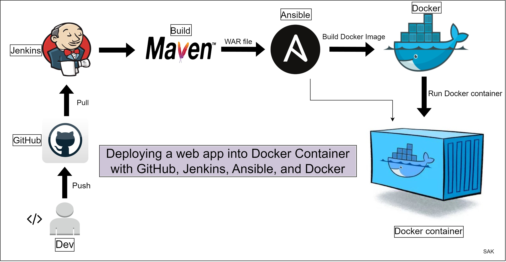
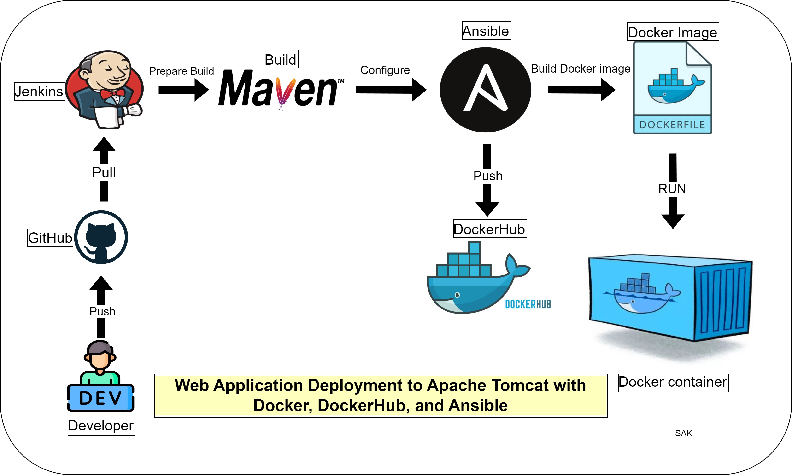
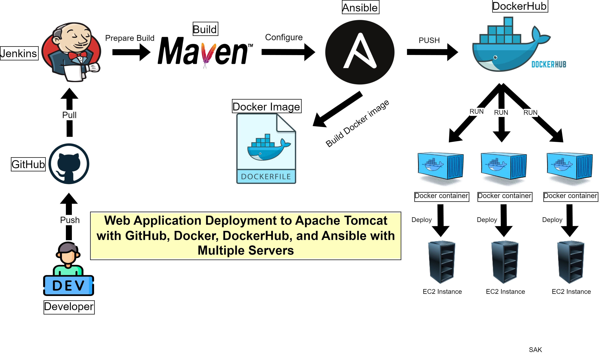
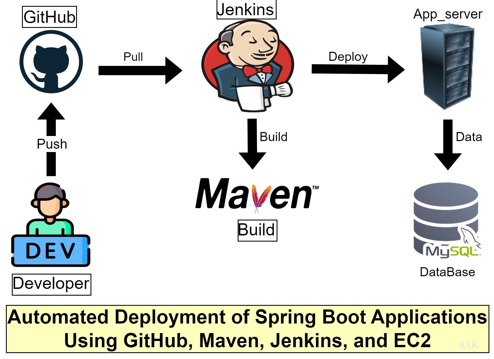
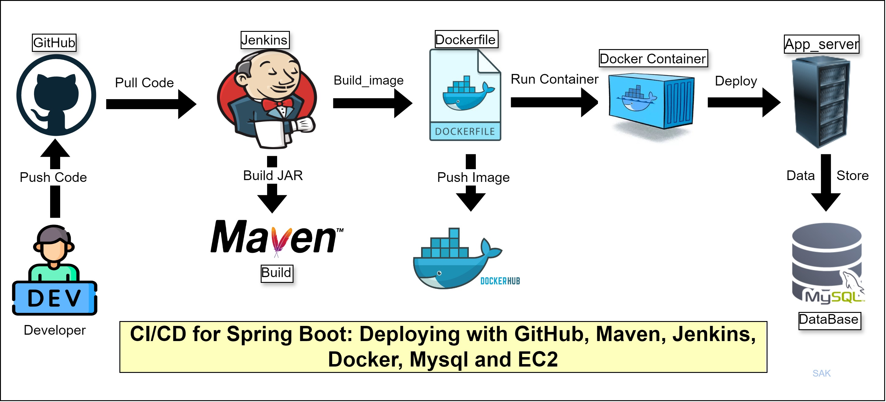
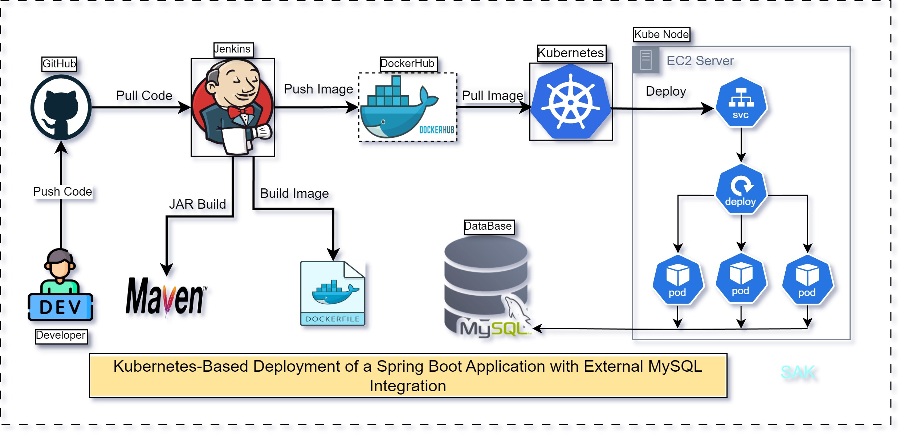

Project 1: Automated Web App Deployment Using Jenkins Freestyle Project with GitHub, Maven, Tomcat, and AWS EC2

- Version control: GitHub for source code management and version control
- Build: Maven for compiling, testing, and packaging Java applications
- CI/CD Pipeline: Jenkins Freestyle Project for building, testing, and deploying the application
- Deployment: Apache Tomcat server hosted on an AWS EC2 instance
Project 2: Automated Web App Deployment Using Jenkins Freestyle Project with GitHub, Maven, Ansible, Tomcat, and AWS EC2

- Version control: GitHub for source code management and version control
- Build: Maven for compiling, testing, and packaging Java applications
- CI/CD Pipeline: Jenkins Freestyle Project for building, testing, and deploying the application
- Configuration Management: Ansible for automating deployment and configuration on the EC2 instance
- Deployment: Apache Tomcat server hosted on an AWS EC2 instance
Project 3: Deployment of Web App Using GitHub, Maven, Jenkins, Ansible, and Docker

- Version control: GitHub for source code management and version control
- Build: Maven for compiling, testing, and packaging Java applications
- CI/CD: Jenkins for automated build, test, and deployment pipelines
- Configuration Management: Ansible for infrastructure provisioning and application deployment
- Containerization: Docker for creating and managing application containers
- Deployment: Deployment done into a Tomcat Docker container
Project 4: Web Application Deployment to Apache Tomcat with Docker, DockerHub, and Ansible

- Cloud Infrastructure: AWS for hosting the entire infrastructure
- Operating System: Linux for running the servers and containers
- Version Control: Git & GitHub for source code management and collaboration
- Containerization: Docker for creating and managing application containers
- Container Registry: DockerHub for storing and distributing Docker images
- Application Server: Apache Tomcat for hosting the Java web application
- Configuration Management: Ansible for infrastructure provisioning and application deployment
Project 5: Multi-Server Web Application Deployment with Docker, DockerHub, and Ansible

- Cloud Infrastructure: AWS for hosting, load balancing, and auto-scaling
- Operating System & Version Control: Linux, Git & GitHub
- Containerization & Registry: Docker, DockerHub
- Application Server: Apache Tomcat on multiple instances
- Configuration Management: Ansible for multi-server provisioning and deployment
Project 6: Continuous Integration and Deployment with GitHub, Maven, Jenkins, Spring, AWS EC2, and RDS

- Version Control: GitHub for source code management and collaboration
- Build Tool: Maven for dependency management and building the Spring application
- CI/CD: Jenkins for automating the build, test, and deployment processes
- Application Framework: Spring for developing the Java-based web application
- Cloud Infrastructure: AWS EC2 for hosting the application
- Database: AWS RDS for storing and managing application data
- Deployment: Automated deployment to AWS EC2 instances
Project 7: CI/CD for Spring Boot: Deploying with GitHub, Maven, Jenkins, Docker, MySQL, and EC2

- Version Control: GitHub for source code management and collaboration
- Build Tool: Maven for dependency management and building the Spring Boot application
- CI/CD: Jenkins for automating the build, test, and deployment processes
- Application Framework: Spring Boot for developing the Java-based web application
- Cloud Infrastructure: AWS EC2 for hosting the application
- Database: MySQL for storing and managing application data
- Containerization: Docker for packaging the application and its dependencies
- Deployment: Automated deployment of Docker containers to AWS EC2 instances
Project 8: Kubernetes-Based Deployment of a Spring Boot Application with External MySQL Integration

- Version Control: GitHub for source code management and collaboration
- Build Tool: Maven for dependency management and building the Spring Boot application
- CI/CD: Jenkins for automating the build, test, and deployment processes
- Application Framework: Spring Boot for developing the Java-based web application
- Container Orchestration: Kubernetes for managing and scaling containerized applications
- Cloud Infrastructure: Kubernetes server setup for hosting the Kubernetes cluster
- Database: External MySQL database for storing and managing application data
- Containerization: Docker for packaging the application and its dependencies
- Deployment: Automated deployment of Docker containers to Kubernetes pods